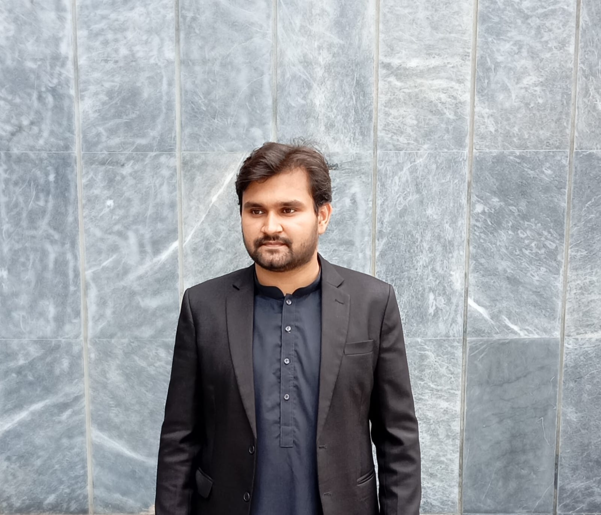

Muhammad Aun Raza
Electrical engineer and robotics researcher specializing in digital twins and synthetic data generation for robots and power equipments. My research interest focus on AI-driven robotics, control systems, and computer vision. Passionate about developing autonomous systems and advancing human-robot interaction through innovative research.
BS Electrical Engineering
Pakistan Institute of Engineering and Applied Sciences (PIEAS)
2022 - 2026
Skills and Tools
Robotics
NVIDIA Isaac Sim
ROS2 Jazzy
MoveIt2
RViz2
SLAM
LiDAR
RGB-D Camera
PointNet++
Motion Planning
Docker
SolidWorks
Onshape
FreeCAD
Computer Vision & AI
Image Processing
3D Vision
Camera Calibration
Object Detection
Semantic Segmentation
ViT
VLN
Model-Assisted Segmentation
YOLO
SAM
DUET
CNN
CUDA
Mediapipe Hands
FastAPI
Programming Languages & Libraries
Python
C++
MATLAB
Embedded C
rclpy
NumPy
Pandas
Matplotlib
Scikit-learn
Open3D
PCL
Git
VPI
ONNX
OpenCV
TensorFlow
PyTorch
Analog Electronics
Circuit Design
Circuit Analysis
RC Filter Design
Amplifier Design
Inverter Design
BJT
Thyristors
MOSFET
PCB Designing
ADC
DAC
KiCAD
MPPT
MATLAB/Simulink
LTspice
Proteus
Digital Electronics
Digital Signal Processing
Sensor Interfacing
IIR Filter Design
FIR Filter Design
Nema Stepper Motors
BLDC Motors
Arduino
ESP32
STM32
Raspberry Pi
I2C
SPI
UART
Arduino IDE
Proteus
MATLAB/Simulink
Work Experience
Pakistan Tokamak Plasma Research Institute
Research Intern · Jun 2025 – Aug 2025
- Developed a MATLAB-based control loop for a heat exchanger setup in the TOKAMAK ionization chamber, implementing PID and ANN-based NARMA-L2 controllers for precise thermal regulation.
- Integrated pressure and temperature sensors with ESP32 to automate water pump control based on threshold detection, enhancing system reliability and safety.
Preply
Engineering Tutor · Since May 2026
- Delivering personalized instruction in Analog and Digital Electronics, Robotics, Signals and Systems, Linear Control Systems, Digital Signal Processing, and AI and Computer Vision.
- Helping students build strong foundational knowledge and practical problem-solving skills in engineering disciplines.
Research Work
Kinematic analysis of a novel 2P4R 6DoF manipulator of 9DoF heavy duty arm having less average error than 6R 6DoF
Kerntechnik Degryter · 1st Author (Accepted)
Designed a 2P4R 6DoF manipulator with lower average positioning error compared to traditional 6R configurations, specifically optimized for critical radiological protection applications in fusion reactors.
IMIGRASP: Zero-shot 6-DOF pose estimation via GenAI imagination and cross-image geometric transfer
IEEE Robotics and Automation Letters · 1st Author (Submitted)
Developed a novel zero-shot framework leveraging GPT-5.6 Luna and SAM3 for 6-DOF pose estimation without prior training. Achieved 86.9% success rate on 130 diverse objects using generative AI imagination and cross-image geometric transfer, validated on a Franka Panda robot.
Final Year Project
AI-Based Fault Detection in Power Inverters
- Developed a hybrid approach combining mathematical modeling in Simulink/Proteus, considering component nonlinearities to generate close to realistic datasets for training the AI model.
- Deployed the trained model on Raspberry Pi 3 integrated with current and voltage sensors via Arduino Nano for real-time monitoring, diagnosis, and failure prediction.
- Utilized Proteus and Simulink for circuit simulation and model validation before hardware deployment.
Tech Stack:
MATLAB/Simulink
Proteus
220W Inverter
ZMPT101b AC Voltage Sensor
ACS712 Current Sensor
DC Voltage Sensor
Arduino Nano
Raspberry Pi 3
XGBoost
SVM
MLP
RNN
CUDA
PyTorch
RTX 5050/ RTX 4050
Python
Projects
Synthetic Data Generation with UR10e
Developed a Synthetic Data Generation pipeline in NVIDIA Isaac Sim (Ubuntu 24.04) for non-textured surfaces. A non-textured object is imported in Isaac Sim, then integrating RGB-D camera with ROS2, specific points are calculated, pattern is drawn by spheres and SAM2 segmentation is done on different videos to make dataset.
Tech Stack:
NVIDIA Isaac Sim
ROS2
RGB-D Camera
Ubuntu 24.04
SAM2
Python
Mining Robot Design and Simulation
Designed a mining robot and 6DoF arm in SolidWorks, simulated in NVIDIA Isaac Sim with ROS2 bridge integration for applying YOLOv8 for object detection in the environment while robot moves a specific path.
Tech Stack:
SolidWorks
NVIDIA Isaac Sim
ROS2
YOLOv8
Python
Digital Clock and 32-bit Quadrature Encoder
Designed and simulated a digital clock and 32-bit quadrature encoder using basic logic gates, flip-flops, counters, and comparator ICs in Proteus for accurate timekeeping and position sensing applications.
Tech Stack:
Proteus
Logic Gates
Flip-Flops
Counters
Comparators
Signal Processing for Audio Signal
Implemented signal processing techniques on audio signals using MATLAB/Simulink, applying filtering, transformation, and analysis methods as detailed in Task 1 and Task 2 specifications.
Tech Stack:
MATLAB
Simulink
Signal Processing
Audio Processing
MPPT for Solar Panels
Implemented Maximum Power Point Tracking (MPPT) using Perturb and Observe algorithm in MATLAB/Simulink for optimizing solar panel power output under varying environmental conditions.
Tech Stack:
MATLAB
Simulink
MPPT
Perturb & Observe
Class AB Amplifier Design
Designed a high-efficiency Class AB amplifier using Darlington Pair Vbe multiplier biasing achieving over 60% efficiency, simulated in Proteus with TIP32/32 transistors and implemented on a veroboard.
Tech Stack:
Proteus
TIP32
Veroboard
Darlington Pair
Amplifier Design
Model-Assisted Segmentation with CNN
Built a complete pipeline for manual segmentation using a custom OpenCV polygon tool, training a 10-layer CNN on RTX 5050 GPU to automatically segment new images for object classification (LaFerrari, Tesla ModelS, etc.).
Tech Stack:
OpenCV
CNN
RTX 5050
Python
Image Segmentation
ESP32 Communication System
Developed a dual ESP32 communication system for text exchange between laptops using Serial Bluetooth Terminal, enabling message transfer from mobile devices through Arduino IDE serial monitoring.
Tech Stack:
ESP32
Bluetooth
Arduino IDE
Wireless Communication
PIR Sensor-Based Home Security System
Integrated a PIR sensor with ESP32 for intrusion detection, connected via Serial Bluetooth Terminal to enable mobile-based alarm control, creating a cost-effective wireless home security solution.
Tech Stack:
ESP32
PIR Sensor
Bluetooth
Arduino IDE
Wireless Communication
DC Power Supply Design
Designed a 24W DC power supply with 12V output and 2A current capability, implementing capacitive filtering to minimize ripple and ensure stable DC output for powering electronic circuits.
Tech Stack:
Power Supply Design
Capacitive Filtering
12V Output
Circuit Design
Nema 17 Stepper Motor Control
Controlled Nema 17 stepper motor using Arduino UNO, L298 motor driver, DC power supply and X9C104 digital potentiometer to control motor speed, demonstrating position and speed control of stepper motors for robotics applications.
Tech Stack:
Arduino UNO
L298 Motor Driver
Nema 17 Stepper Motor
X9C104 Digital Potentiometer
DC Power Supply
Arduino IDE